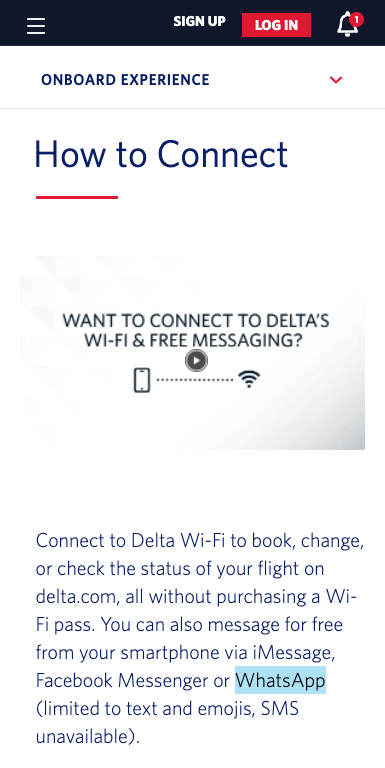
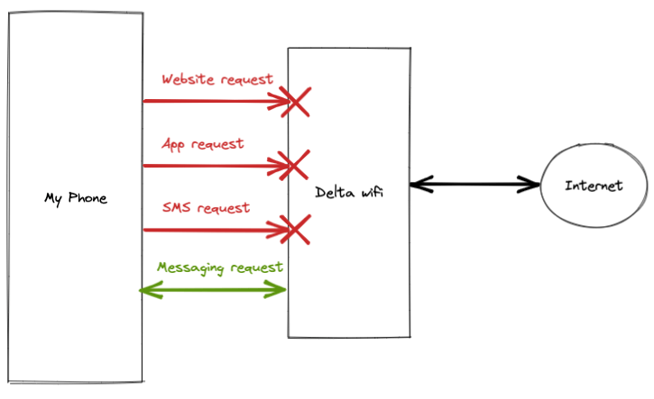
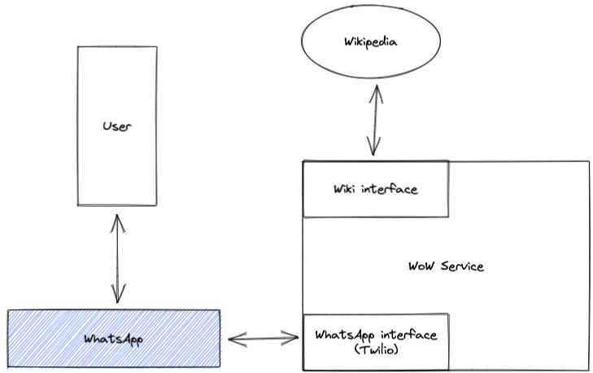
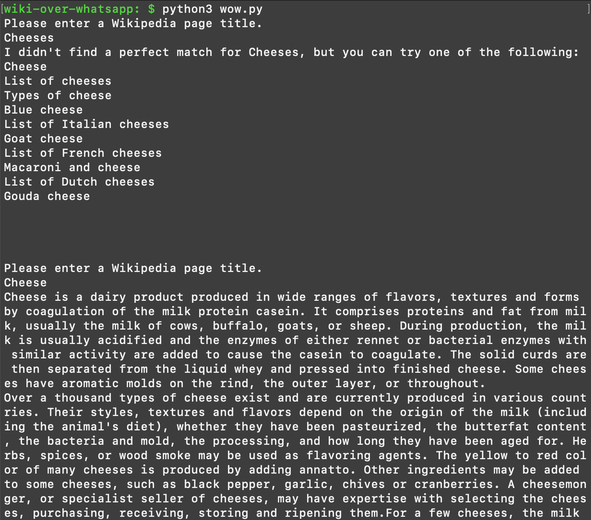
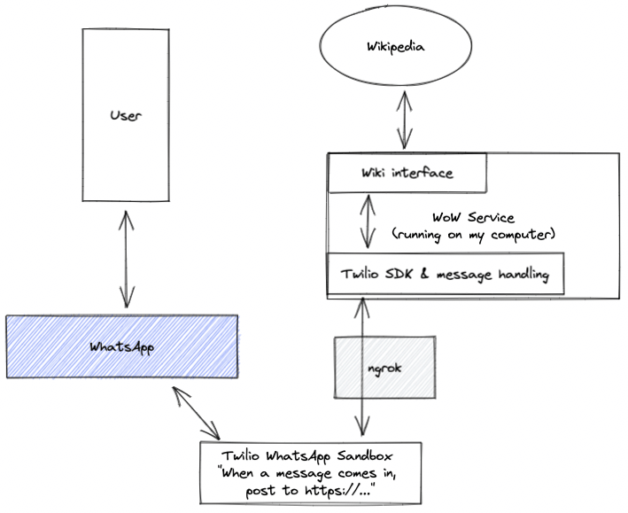
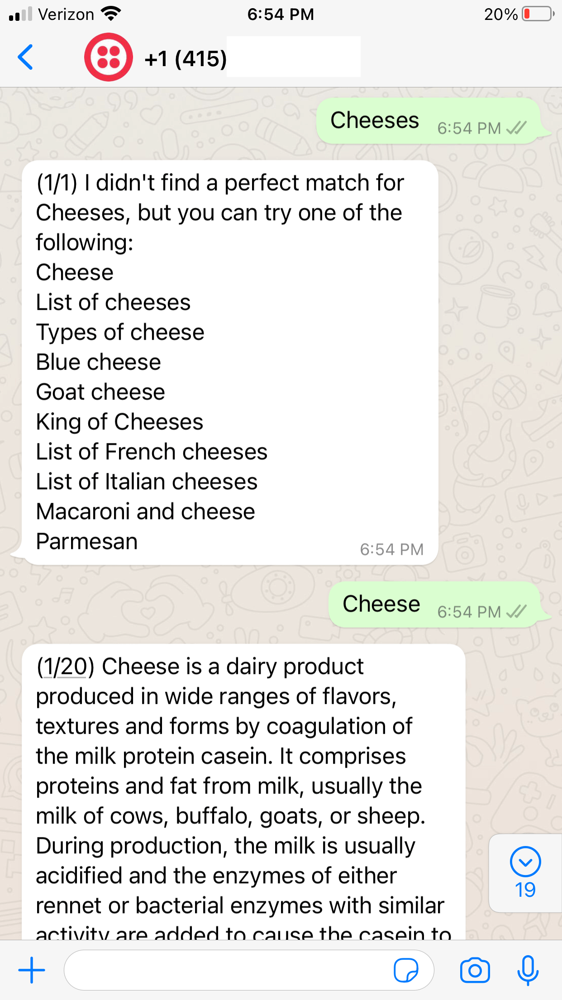

Wikipedia Over WhatsApp
Tunneling Wikipedia through WhatsApp to (maybe?) get around wifi restrictions
May 21, 2022 · 1242 words · 6 minutes read
In-flight messaging
I was on a Delta flight the other day, and I was thinking about how they offer free messaging from your smartphone.

How do they limit the wifi? Maybe they have some basic filter that says “deny everything except the urls for these 3 messaging apps”, which makes sense conceptually.

What if we don’t want to pay for wifi and we still want to be able to browse the web?
Tunneling through WhatsApp
If the wifi is letting WhatsApp messages through, what if we used WhatsApp as a vehicle for the information we really care about? Much like we encapsulate the rest of our networking objects in higher-level objects, we could encapsulate web pages inside of WhatsApp messages.
We could start with a simple case, like Wikipedia. It’s mostly text-based, so there should be no issue with sending images (which are blocked in the free messaging over wifi). What if we built a basic service that allowed users to query Wikipedia pages and read them over WhatsApp?
Maybe it looks something like this, where a user sends a message to a WhatsApp number. If we hook that number into a WhatsApp automated backend (probably via Twilio), we can have that backend parse the message, query Wikipedia, and send the response.

There are two main components to this Wikipedia Over WhatsApp, or WoW service:
- The parsing of the messages and making requests to Wikipedia
- The WhatsApp interface for sending/receiving messages
Requesting articles from Wikipedia
Wikipedia has a pretty approachable API that allows you to do a few things. We can keep our service very simple: let’s say the user has to send the title of a Wikipedia article. If there’s an article that matches, we respond with it. If there isn’t an article that matches, we can do a search for the given text and return the top 10 articles.
A very basic Python version might look something like this:
import urllib.parse
import urllib.request
import json
# URL to query a page, format JSON, extract the text, and give us plain wiki text.
PAGE_WIKI_REQ_STRING = 'https://en.wikipedia.org/w/api.php?action=query&format=json&prop=extracts&list=&formatversion=2&exlimit=1&explaintext=1&exsectionformat=wiki&titles='
# URL to search for articles for a search term.
SEARCH_WIKI_REQ_STRING = 'https://en.wikipedia.org/w/api.php?action=query&format=json&list=search&formatversion=2&srsearch='
# This is a simple function for getting articles from wikipedia
def get_wiki_page(page_name):
# Encode the article name and build the URL.
encoded_page_name = urllib.parse.quote(page_name.encode('utf8'))
page_req_url = PAGE_WIKI_REQ_STRING + encoded_page_name
page_result = urllib.request.urlopen(page_req_url)
result_body = page_result.read()
result_json = json.loads(result_body.decode('utf-8'))
# If it's an article, we should have gotten an 'extract', so we can send it.
# In our case, this will be the entire article.
query_result = result_json['query']['pages'][0]
if 'extract' in query_result and query_result['extract'] != '':
return query_result['extract']
else:
# If we don't have an article, we can instead search for articles for
# that term and return the top 10 results.
result_string = 'I didn\'t find a perfect match for ' + \
page_name + ', but you can try one of the following:\n'
# Try to search for it now.
search_req_url = SEARCH_WIKI_REQ_STRING + encoded_page_name
search_result = urllib.request.urlopen(search_req_url)
search_result_body = search_result.read()
search_result_json = json.loads(search_result_body.decode('utf-8'))
for result in search_result_json['query']['search']:
result_string += result['title'] + '\n'
return result_string
To test this, we could even throw it together for a quick CLI tool:
... code from above
def main():
while(True):
page_name = ''
while page_name.strip() == '':
page_name = input('Please enter a Wikipedia page title.\n')
get_wiki_page(page_name)
print('\n\n')
if __name__ == '__main__':
main()
Running that gives the following:

That’s a good start! Given a page name, we can search for articles or get the requested article. The formatting is wonky, but we’re just having fun here.
The WhatsApp interface
Like a good engineer, I started with a Google search, and one of the first results was exactly on the money:
How to Receive WhatsApp Messages in Python Using Flask and Twilio
I won’t bore you with the details, but the TL;DR is that it’s pretty easy to set up a sandbox Twilio WhatsApp environment that you can send and receive messages with. I hooked this up with a few changes, and the relevant parts are in the following diagram:

The flow is roughly like this:
- The user sends a message to the WhatsApp number that corresponds with a Twilio number
- That Twilio number is connected to Twilio hooks that say “when I receive a message, post it to this URL”
- That URL corresponds to an ngrok URL fronting my WoW service running on my computer
- My WoW service receives the message and passes it to the
get_wiki_pagecode above - Once we have a response, we can send it back through Twilio to the user
The only issues ended up being that 1) WhatsApp messages are limited to 1600 characters, while Wikipedia pages are frequently much longer and 2) the basic free accounts I was using rate-limit to ~1QPS, so if you try to chunk up a message and send it as many messages, you may get throttled. To handle those, we can do some basic chunking and delay between messages. You’re on a plane after all; you’ve got nowhere to go!
This simple WoW service, with its message handling, ended up looking something like
this:
import os
from dotenv import load_dotenv
from flask import Flask, request
from twilio.twiml.messaging_response import MessagingResponse
from twilio.rest import Client
import time
import wow
# Leave some room for the progress meter, like `(1/20) `
MESSAGE_SIZE = 1590
load_dotenv()
app = Flask(__name__)
TWILIO_ACCOUNT_SID = os.environ.get('TWILIO_ACCOUNT_SID')
TWILIO_AUTH_TOKEN = os.environ.get('TWILIO_AUTH_TOKEN')
client = Client(TWILIO_ACCOUNT_SID, TWILIO_AUTH_TOKEN)
# https://www.twilio.com/blog/receive-whatsapp-messages-python-flask-twilio
def respond(request, full_message):
# Break the message up into chunks that fall under the WhatsApp character
# limit and send them with a delay in between.
chunks = (len(full_message) // MESSAGE_SIZE) + 1
for i in range(chunks):
start = i * MESSAGE_SIZE
end = start + MESSAGE_SIZE
progress = '({}/{}) '.format(i + 1, chunks)
message_chunk = progress + full_message[start:end]
client.messages.create(
body=message_chunk,
from_=request.form.get('To'),
to=request.form.get('From'),
)
time.sleep(1)
return str(MessagingResponse())
@app.route('/message', methods=['POST'])
def reply():
message = request.form.get('Body')
if message:
result = wow.get_wiki_page(message)
return respond(request, result)
Once I wired everything up and debugged a little, it ended up working pretty smoothly!
{kind=link}

As you can see, I now have 20 full messages of the entire Wikipedia page on Cheese to read, and this will keep me plenty busy for the flight!
What would this need to go past a prototype?
For one, like most of my side projects, my artificial limit here was not paying for anything, so I’m rate limited, using the sandbox, and running the service off of my own computer.
The user experience is also pretty rough - maybe we’d want to allow for an easy way to get to the next page? Maybe paginating so you don’t get the full article all at once? Maybe sending a section at a time, so if you’re really just interested in the history of the harmonica, you don’t have to get to the rest of the page?
Nothing quite kills the fun of a silly side project like having to do anything real for it, and as soon as I started to read the guidelines for the WhatsApp Business API and integrating with other Meta services, I realized I wasn’t going to go through with setting this up as a publicly-available service. Feel free to set your own up, though!
Back to the original question, though: would this really work? I think so off the top of my head, but I’ll just have to try setting up a sandbox again before my next flight.
Either way, a fun little toy :)